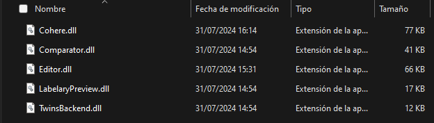

Cada función del IDE esta implementada como un modulo adicional, de esta manera se pueden ir agregando o cambiando funciones sin riesgos de romper otras.
Junto al ejecutable principal se encuentra la carpeta 'Módulos', en esa carpeta se hallan separados por archivos .dll todas las funciones implementadas en el IDE.

Para deshabilitar alguna función basta con remover su respectivo archivo de esta carpeta.
Para desarrollar un nuevo modulo ver 5. Desarrollo.